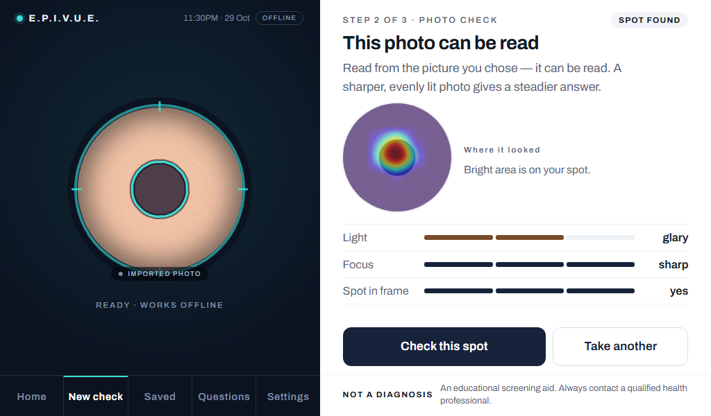
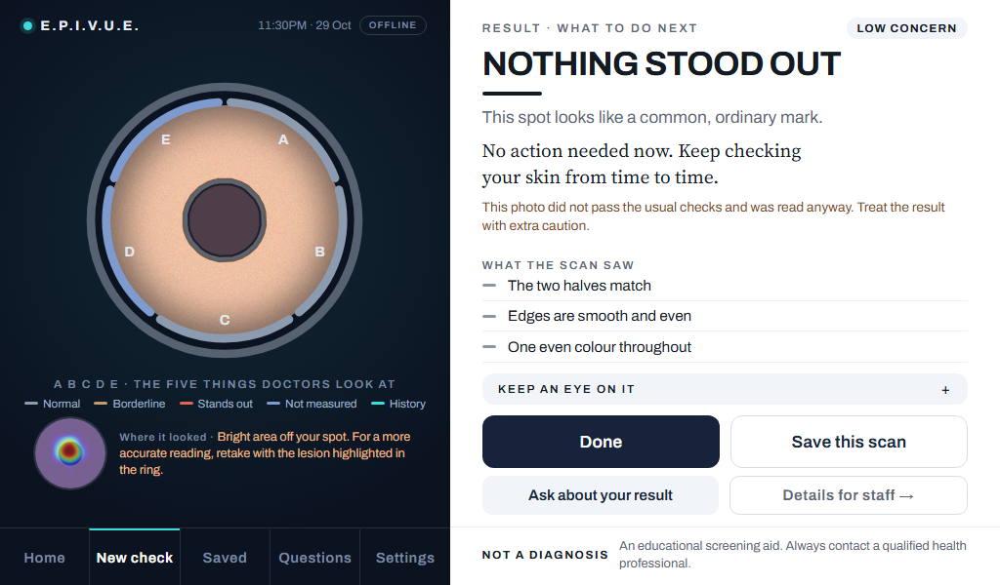

EPIVUE is a small kiosk that photographs one spot on someone's skin and says, in plain words, whether it would be wise to show that spot to a doctor.
It runs on a Raspberry Pi with a camera and a touch screen. It works with no internet, so it can be used at a barangay health event. It does not diagnose. It is a screening aid: its job is to help people decide to get a spot checked, especially when they would not have gone otherwise.
The screen has two sides:
| Part | What it does |
|---|---|
| Raspberry Pi 4 Model B (4 GB) | The computer. Runs the scanner, the screen and the model — all on its own CPU, no graphics card. |
| Pi Camera Module 2 | Takes the photo of the spot. Plain pixels go to the model (no filters — filters made accuracy worse). |
| 7" touch screen, 1024 × 600 | The kiosk screen. Navy panel on the left (the ring and the photo), white panel on the right (the words and buttons). |
| Official USB-C power supply, 5.1 V 3 A | Steady power. A weak supply makes the Pi slow down or restart. |
| A PC with an RTX 4060 graphics card | Training only. The model was taught on the PC (about 1 h 40 min), then copied to the Pi. |
Everything happens in a few steps. Each step has a job, and some steps can stop the photo early.

A model only knows what it was shown. EPIVUE's model was shown 48,481 photos of skin spots whose diagnosis was already confirmed by doctors.
| Collection | What kind of photos | Photos |
|---|---|---|
| BCN20000 | Dermoscopy, Hospital Clínic, Barcelona (Spain) | 17,188 |
| MILK10k | Dermoscopy and ordinary close-ups of the same spots | 10,178 |
| HAM10000 | Dermoscopy, Vienna (Austria) and Queensland (Australia) | 10,015 |
| MSK-1 to MSK-5 | Dermoscopy, Memorial Sloan Kettering, New York (USA) | 8,802 |
| PAD-UFES-20 | Smartphone close-ups, Brazil — the closest thing to the Pi camera | 2,298 |
All come from the ISIC Archive (International Skin Imaging Collaboration). Dermoscopy = a photo taken through a special magnifying lens that a skin doctor presses on the skin. Close-up = an ordinary camera photo, like the Pi's.
| Label | What is in it (examples) | Photos |
|---|---|---|
| benign | Ordinary moles (nevi), seborrheic keratosis, other harmless spots | 23,898 |
| pre-cancerous | Actinic keratosis (sun damage that can turn into cancer), squamous cell carcinoma in situ | 3,191 |
| malignant | Melanoma, basal cell carcinoma, squamous cell carcinoma | 21,392 |
| Part | Used for | Photos |
|---|---|---|
| Training (70 %) | The model learns from these. | 33,847 |
| Validation (15 %) | Used while training to pick the best version and set the decision limit. | 7,346 |
| Test (15 %) | Never seen during training. Used once, at the end, to measure. | 7,288 |
lesion_id).On top of the test split, there is a frozen set of 602 photos from places the model was never trained on (including the 2016 ISIC challenge set and the 99 photos the team collected in October). It is used to compare models fairly and is never trained on. A new model is only allowed onto the Pi after it is measured on this set.
The "brain" of EPIVUE is a convolutional neural network (CNN) called EfficientNetB0, made by Google researchers in 2019.
A CNN looks at a picture in layers. The first layers find tiny things — edges, dots, colour changes. Middle layers combine those into textures and shapes. The last layers combine those into "patterns that look like a melanoma" or "patterns that look like an ordinary mole". At the end it gives three numbers that add up to 100 %: how much the photo looks benign, pre-cancerous or malignant.
| Step | Size | What happens |
|---|---|---|
| Input | 224 × 224 pixels, 3 colours | The photo is shrunk to a small square. Raw colour values 0–255 go in (the model scales them itself). |
| EfficientNetB0 body | ~4 million weights | The layers that find edges → textures → shapes. Starts from a version pre-trained on ImageNet (1.2 million everyday photos), then re-trained on skin. |
| Last feature map | 7 × 7 × 1280 | A 7-by-7 grid over the photo; each square has 1,280 "pattern detectors". The heatmap is read from here. |
| Average pooling | 1280 numbers | Averages the grid into one list. |
| Dropout 0.3 → Dense 128 → Dropout 0.3 | 128 | A small extra layer. Dropout switches off random parts during training so the model does not just memorise. |
| Output (softmax) | 3 numbers | benign · pre-cancerous · malignant, adding to 100 %. |
On the Pi the model is a TensorFlow Lite file, models/skin_classifier.tflite, only 5.1 MB. TensorFlow Lite is a small version of TensorFlow made for phones and small computers.
The model gives three numbers. The decision uses only one rule.
Why 0.47? It was chosen so that, on the validation photos, the scanner flags 90 % of the real cancers. A lower limit catches more cancers but sends more harmless spots to the doctor; a higher limit does the opposite. For a screening tool, missing a cancer is worse than an extra visit, so the limit leans toward catching cancers.
| Message | When |
|---|---|
| NOTHING STOOD OUT (low concern) | Not flagged, and the model is reasonably sure (top score ≥ 45 %). |
| NOT SURE | Not flagged, but the model is unsure. Advice: better photo, or a health worker. |
| GET THIS CHECKED | Flagged, the strongest guess is pre-cancerous. |
| BETTER TO GET CHECKED | Flagged, but the model is unsure. |
| SEE A DOCTOR SOON (urgent) | Flagged, and the strongest guess is malignant. |
| WE CAN'T JUDGE THIS PHOTO | "Check it anyway" was pressed on a photo with no spot (plain skin, hair, several marks). The model's numbers would mean nothing, so no answer is given. |
DECISION: cancer score 0.62 · limit 0.47 → flagged.| Metric | Plain meaning | Example |
|---|---|---|
| Sensitivity | Of all the real cancers, how many did it flag? | 0.81 = it flagged 81 of every 100 cancers. |
| Specificity | Of all the harmless spots, how many did it correctly leave alone? | 0.59 = it left 59 of every 100 harmless spots alone; the other 41 were sent to get checked. |
| Accuracy | How often the single label was right. | Not the best measure here — see below. |
| ROC-AUC | How well it ranks cancers above harmless spots, from 0.5 (coin toss) to 1.0 (perfect). | 0.89 = good on its own test; 0.75 = fair on the hard external set. |
Why not just accuracy? If 9 of 10 spots are harmless, a "scanner" that always says "harmless" is 90 % accurate and useless. For screening, sensitivity (catching cancers) matters most.
| Measure (at the 0.47 limit) | Value |
|---|---|
| Cancer sensitivity (pre-cancerous + malignant flagged) | 0.907 |
| Benign specificity | 0.633 |
| ROC-AUC (cancer vs harmless) | 0.894 |
| 3-label accuracy | 0.684 |
| Recall per label: benign / pre-cancerous / malignant | 0.69 / 0.57 / 0.73 |
| June model (old) | October model (on the Pi now) | |
|---|---|---|
| ROC-AUC | 0.712 | 0.754 |
| Cancers flagged | 90 / 149 (0.60) | 121 / 149 (0.81) |
| Harmless spots left alone (specificity) | 0.71 | 0.59 |
| Ordinary close-up photos: cancers flagged | 7 / 31 | 28 / 31 |
| The team's 96 malignant photos: flagged | 72 | 75 |
Speed: the photo check takes about 70 ms; the model about 0.6 s on a Pi 4 (estimate — the Pi's own timing will be recorded from the 30 October session); the heatmap about 0.5 s on the PC, about 1 s expected on the Pi.
The model has no answer for "this is not a skin spot". Shown a wall, it would still pick benign, pre-cancerous or malignant. So a photo check runs before the model.
| Check | Question | Label if it fails | "Check it anyway"? |
|---|---|---|---|
| 1. Skin | Is enough of the photo skin-coloured? | SKIN NOT RECOGNISED | No |
| 2. Readable | Sharp enough? Light enough, not glaring? | CAN'T READ · BLURRY / DARK / GLARE | No |
| 3. Spot | One distinct mark, inside the ring, on its own? | NOT A SPOT · NONE FOUND / PLAIN SKIN / SEVERAL MARKS · SPOT · NOT IN THE RING / TOO CLOSE | Yes |
| 4. Edge | Does the mark have a real edge (a mole stops; a shadow fades)? | SPOT · LOOKS LIKE A SHADOW / EDGE HARD TO FOLLOW | Yes |
When the photo passes, the label is SPOT FOUND and the outline the check drew is shown on the photo, so everyone can see which mark is being read.
Doctors check moles with the "ABCDE" rule. EPIVUE measures three of the five on the outline the photo check drew. These signs never change the verdict — the model decides; the signs help a person see what to look at.
| Letter | Doctors look at… | How EPIVUE measures it | Normal / borderline / stands out |
|---|---|---|---|
| A Asymmetry | Are the two halves different? | Turns the outline level, folds it along both axes, and measures how much does not line up (0 = mirror image). | below 0.15 / 0.15–0.30 / above 0.30 |
| B Border | Is the edge ragged or blurred? | Compares the edge length to the area: perimeter² ÷ (4π × area). A perfect circle scores 1.0; a ragged edge scores higher. | below 1.8 / 1.8–2.5 / above 2.5 |
| C Colour | Several colours inside? | Groups the colours inside the spot (k-means in the Lab colour space); groups too close together are merged. | 1 colour / 2 / 3 or more |
| D Diameter | Bigger than 6 mm? | Not measured. Millimetres need a known scale; this camera has none. Shown as "no scale". | — |
| E Evolving | Has it changed over time? | Not measured automatically. Save scans of one spot into a group; "Compare" shows the first and latest photo side by side for a person to judge. | Teal "History" arc when a spot has 2+ saves |
On screen, the five letters are arcs around the ring, coloured by tier (grey = normal, tan = borderline, red = stands out, blue = not measured), and the result lists them in words ("Edges are slightly uneven").

The heatmap shows where the model looked in the photo. Red/yellow = where its attention was strongest; blue = little attention.
Many papers use Grad-CAM, which needs "gradients" (a calculation done while training). TensorFlow Lite on the Pi cannot calculate gradients, so Grad-CAM is impossible there. EPIVUE uses Eigen-CAM (Muhammad & Yeasin, 2020), which needs only one normal forward pass. Please write "Eigen-CAM" in the paper and slides.
EPIVUE checks whether the brightest point of the heatmap falls inside the outline the photo check drew (with a small margin). The visitor sees:
Staff see the percentage of all the heat that sits on the spot. It appears on the check screen after a passing photo, and as a smaller row under the ring on the result. Tap the circle to put the heatmap in the big ring, with the outline on top.
Gemma 4 does not run on the Pi. The Pi has 4 GB of memory; the smallest Gemma 4 needs about 8 GB. An earlier chatbot on the Pi made scans take 30–60 seconds, so it was removed on 1 October.
Instead, Gemma 4 helps at build time on the PC: the script scripts/draft_answers_gemma.py rewords the team's approved Questions-tab answers into plainer words (keeping every timeframe). The Pi then serves those answers offline, with the badge "DRAFTED BY GEMMA 4 · NOT YET REVIEWED BY A DOCTOR" until a health professional signs them off. The Questions tab itself matches your question to a written answer (TF-IDF search); nothing is generated at the kiosk.
~/.dermascan/saved/) until staff press "End event", which empties them.The same screens run as a website so people can try it from home. Differences, on purpose:
| Feature | Pi kiosk | Website |
|---|---|---|
| Photo check, A B C D, heatmap, verdict, Questions, staff details | Yes | Yes |
| Camera | Pi camera | Your webcam or a picture you choose |
| Saved, Compare, E (evolving) | Yes | No — the website keeps nothing |
| Settings (staff code, update, End event) | Yes | No |
| What | Number |
|---|---|
| Training photos / collections | 48,481 photos · 9 collections |
| Split | 70 / 15 / 15 %, by spot (lesion), not by photo |
| Model | EfficientNetB0 · 224 × 224 input · 3 labels · 5.1 MB TensorFlow Lite |
| Decision | flag if p(pre-cancerous) + p(malignant) ≥ 0.47 (set for 90 % sensitivity on validation) |
| Views averaged | 4 (as-is, mirrored, upside down, rotated 180°) |
| Test split | sensitivity 0.907 · specificity 0.633 · AUC 0.894 |
| External benchmark (602 photos) | 121 / 149 cancers flagged (0.81) · specificity 0.59 · AUC 0.754 |
| Heatmap | Eigen-CAM · 7 × 7 grid from the 7 × 7 × 1280 feature map · ~1 s on the Pi |
| A / B / C tiers | A 0.15 / 0.30 · B 1.8 / 2.5 · C 1 / 2 / 3+ colours |
| Word | Meaning |
|---|---|
| Benign | Harmless; not cancer. |
| Pre-cancerous | Not cancer yet, but can become cancer (e.g. actinic keratosis). |
| Malignant | Cancer (e.g. melanoma, basal cell carcinoma). |
| Lesion | Any spot or mark on the skin that looks different from the skin around it. |
| Dermoscopy | Photos through a skin doctor's magnifying lens, with even light and no glare. |
| CNN | Convolutional neural network: a computer model that learns to recognise patterns in pictures. |
| Transfer learning | Starting from a model already trained on everyday photos, then re-training it on a new task. |
| Feature map | The grid of "pattern detectors" inside a CNN. EPIVUE's last one is 7 × 7 × 1280. |
| Softmax | The last step that turns the model's raw scores into percentages adding to 100 %. |
| Threshold / limit | The cut-off (0.47) above which a spot is flagged. |
| Sensitivity / specificity | Share of cancers caught / share of harmless spots correctly left alone. |
| ROC-AUC | One number for how well the model ranks cancers above harmless spots (0.5 coin toss, 1.0 perfect). |
| Temperature scaling | Softening the displayed percentages so they are not over-confident. Display only. |
| Test-time augmentation (TTA) | Reading the photo in 4 orientations and averaging, for a steadier answer. |
| Eigen-CAM | A heatmap method that needs one forward pass; shows where the model looked. |
| Gate / photo check | The checks that run before the model to refuse unusable photos. |
| TensorFlow Lite | A small version of TensorFlow for phones and small computers like the Pi. |
| Data leakage | When test photos (or the same spot) were also seen in training, making results look better than they are. |
Sources for every number: docs/METRICS.md, training/dataset_index.csv, training/splits.csv, models/thresholds.json, dermascan/config.py, dermascan/signs.py, dermascan/cam.py. What the paper must say differently: docs/PAPER_ALIGNMENT.md. References: Tan & Le 2019 (EfficientNet); Tschandl et al. 2018 (HAM10000); Muhammad & Yeasin 2020 (Eigen-CAM); Cassidy et al. 2022 (split leakage in ISIC data).